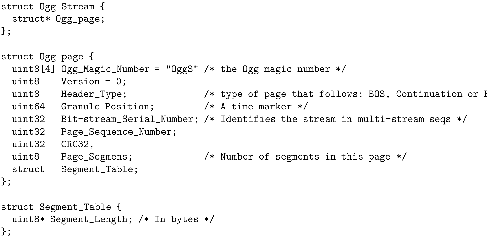
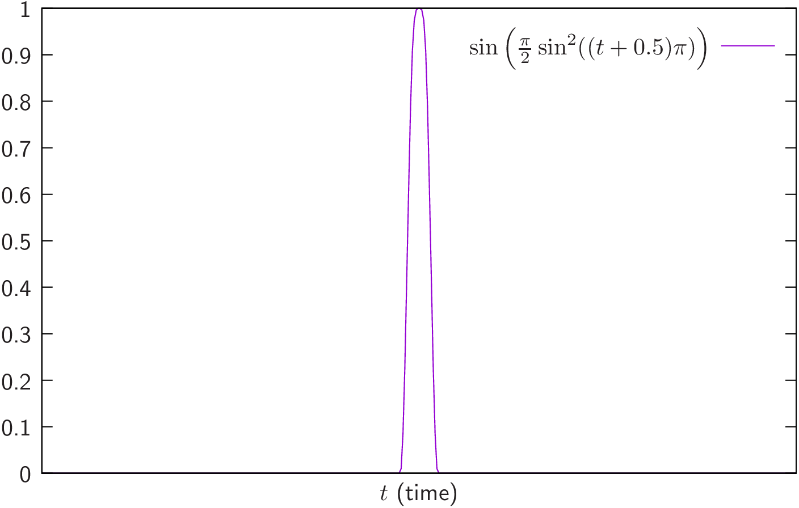
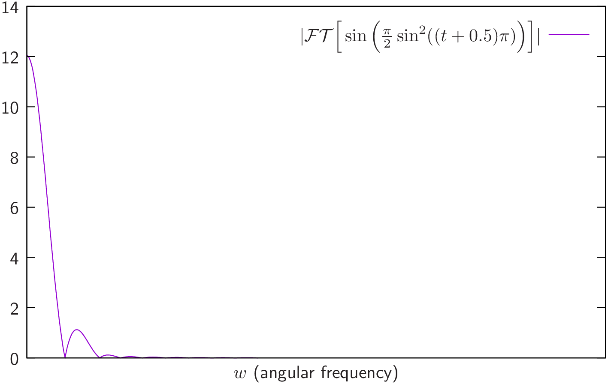

Vorbis audio coding
Vicente González Ruiz
May 13, 2019
1 Steps
- Overlaped subband analysis using MDCT.
- Perceptual quantization.
- Entropy coding.
2 Overlaped processing
0 N-1 2N-1 3N-1
+---------------+---------------+---------------+ s[n]
<--------Transform Step--------->
<---------Transform Step-------->
- Each transform step inputs
samples and outputs
MDCT coeficients.
-
can vary depending on the characteristics of the sound. For complex sounds
without clear armonics (such as a plosive sound), shortened windows
improve the performance. For simple sounds (such as a music instrument),
large windows are better.
3 Channel coupling
Most of the time, similar sounds are transported in the channels of a non-mono audio
signal. Channel coupling decreases inter-channel redundancy, usually, using
prediction techniques.
4 Perceptual quantization & white-noise filling
Depending on the desired output bit-rate and the frequency (see the ATH model),
the SAM applies a different quantization step to barks (see Section~??). Roughly
speaking, the higher the compression ratio, the larger the quantization step and
therefore, the quantization noise; and the higher the frequency, the wider the bark.
Notice also that the perception of a tone in a bark depends also on the temporal
masking.
At decoding time, those barks that suffered the biggest lossess are usually filled
with white noise in order to increase the perceived quality.
4.1 MDCT (Modified Discrete Cosine Transform)
- Equivalent to apply a bank of
filters.
- Determines the correlation between a set of
numbers (samples) and
orthogonal
cosine functions. Therefore, at the input of the DCT there are
samples and at the output,
coefficients.
- The MDCT coefficients
of the PCM samples
are defined as:
|
| (1) |
5 Entropy coding
VLC of MDCT coefficients.
5.1 Stream format

5.2 Window

